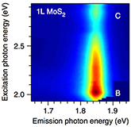

Research
Many chemical compounds and elemental substances naturally crystallize in a van der Waals layer structure. When isolated, their individual layers are effectively two-dimensional (2D), having thicknesses of no more than a few atoms. Examples of 2D materials include graphene, phosphorene, monolayers of transition metal chalcogenides and organic-inorganic perovskites. Our research focuses on exploring and exploiting the unusual physical and chemical properties of such 2D materials with a vision to developing novel technologies in energy, sensing, and computing applications.



Some of the recent developments of the field are summarized in our Review and Perspectives articles:
- H. Schmidt, F. Giustiniano, and G. Eda, “Electronic transport properties of transition metal dichalcogenide field-effect devices: surface and interface effects” Chem. Soc. Rev. Advance Article (2015).
- W. Zhao, R.M. Ribeiro, and G. Eda “Electronic structure and optical signatures of semiconducting transition metal dichalcogenide nanosheets” Acc. Chem. Res. 48, 91 (2015).
- G. Eda and S. Maier “Two-Dimensional Crystals: Managing Light for Optoelectronics” ACS Nano 7, 5660 (2013).
- M. Chhowalla, H.S. Shin, G. Eda, L.-J. Li, K. P. Loh and H. Zhang “The chemistry of two-dimensional layered transition metal dichalcogenide nanosheets” Nature Chem. 5, 263 (2013).
- G. Eda and M. Chhowalla “Chemically derived graphene oxide: Towards large-area thin film electronics and opto-electronics” Adv. Mater. 22, 2392 (2010).
- K. P. Loh, Q. Bao, G. Eda, and M. Chhowalla “Graphene Oxide as a Chemically Tunable Platform for Optical Applications” Nat. Chem. 2, 1015 (2010).
- G. Eda and M. Chhowalla “Graphene patchwork” ACS nano 5, 4265 (2011).